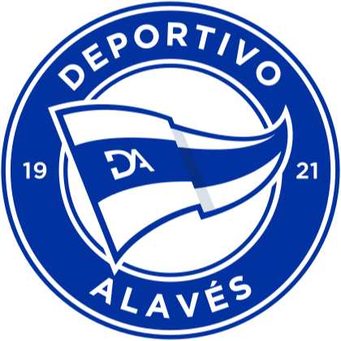
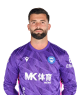
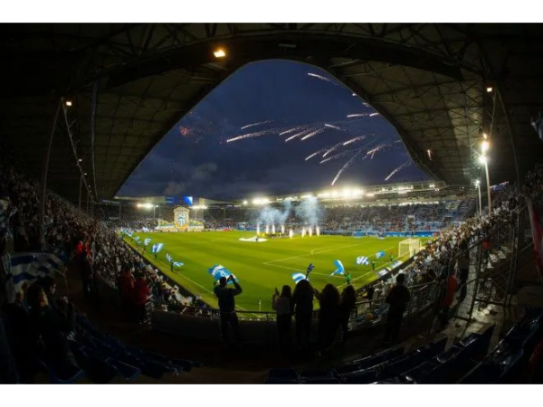

LaLiga: equipos y leyendas
Una página sobre los clubes y los jugadores que forman su historia.
LaLiga: equipos y leyendas
Una página sobre los clubes y los jugadores que forman su historia.
El Deportivo Alavés, fundado en Vitoria-Gasteiz el 23 de enero de 1921, es uno de los clubes históricos del fútbol vasco. Conocido como el Glorioso, tiene en Mendizorroza, inaugurado en 1924, el centro de su identidad albiazul. Debutó en Primera División en la temporada 1930/31 y, tras distintas etapas en categorías inferiores, regresó a la élite en 1998 después de 42 años. El sexto puesto de 1999/2000 abrió las puertas de Europa y dio paso a su inolvidable final de la Copa de la UEFA de 2001 ante el Liverpool, resuelta por 5-4 en la prórroga. Su trayectoria también incluye cuatro campeonatos de Segunda División, una Copa Federación y la final de la Copa del Rey de 2017, hitos que reflejan la capacidad del club para superar dificultades y el apoyo constante de su afición.


